The Internet of Things (IoT) is the inter-networking of physical devices, vehicles (also referred to as "connected devices" and "smart devices"), buildings, and other items embedded with electronics, software, sensors, actuators, and network connectivity which enable these objects to collect and exchange data.
Typically, IoT is expected to offer advanced connectivity of devices, systems, and services that goes beyond machine-to-machine (M2M) communications and covers a variety of protocols, domains, and applications.
The interconnection of these embedded devices, is expected to usher in automation in nearly all fields, while also enabling advanced applications like a smart grid, and expanding to areas such as smart cities.
"Things", in the IoT sense, can refer to a wide variety of devices such as heart monitoring implants, biochip transponders on farm animals, electric clams in coastal watersng or field operation devices that assist firefighters in search and rescue operations.
These devices collect useful data with the help of various existing technologies and then autonomously flow the data between other devices.Current market examples include home automation such as the control and automation of lighting, heating,ventilation, air conditionin systems, and appliances such as that use Wi-Fi for remote monitoring.
The following projects will be executed , on the following days of the workshop.
Most Arduino boards contain a light-emitting diode (LED) and a load resistor connected between pin 13 and ground, which is a convenient feature for many tests and program functions. A typical program for a beginning Arduino programmer blinks a LED repeatedly. #define LED_PIN 13 // Pin number attached to LED.
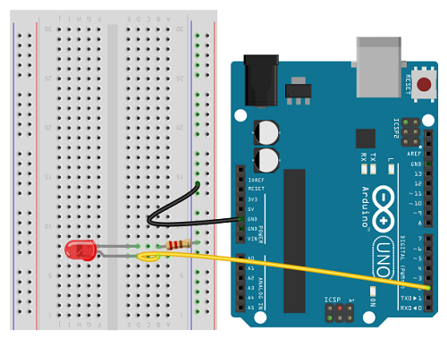Wireless sensor networks (WSN), sometimes called wireless sensor and actuator networks (WSAN), are spatially distributed autonomous sensors to monitor physical or environmental conditions, such ... Especially due to the integration of sensor networks, with IoT, the authentication of user become more challenging
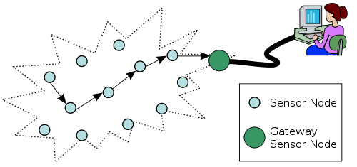A smartphone is a mobile personal computer with a mobile operating system with features .... Smartphones before present-day Android-, iOS- and BlackBerry-based phones .... devices to be docked for use with a PC-styled desktop environment. ..... 90% of college students surveyed text (initiate, reply or read) while driving.
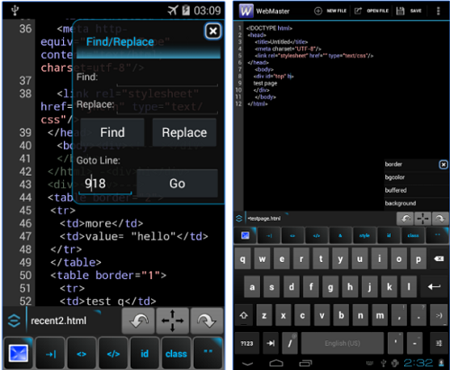A voice command device (VCD) is a device controlled by means of the human voice. ... In addition, the software comes with an interactive tutorial, which can be ... Any mobile device running Android OS, Microsoft Windows Phone, iOS 5 or later, or Blackberry OS provides voice command capabilities. ... "Now You're Talking".
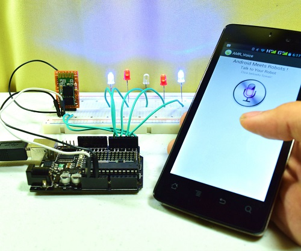Home automation or domotics is building automation for a home, called a smart home or smart ... the system is controlled with a user interface that is interacted either with a wall-mounted terminal, mobile phone software, .... Each language speaks to the various connected devices and instructs them to perform a function.
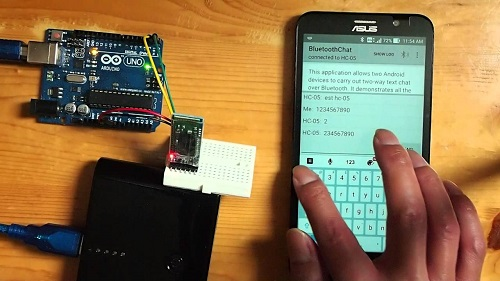Android is a mobile operating system developed by Google, based on the Linux kernel and designed primarily for touchscreen mobile devices
Bluetooth is a wireless technology standard for exchanging data over short distances from fixed .... Bluetooth Low Energy, introduced in the 4.0 specification, uses the same ..... Released on December 2, 2014, it Introduces features for the Internet of Things. ..... Jump up ^ "OEM Bluetooth Serial Port Module OBS433".
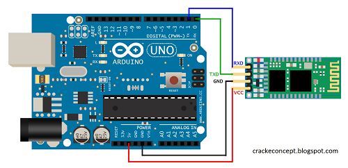Home automation or domotics is building automation for a home, called a smart home or smart ... Early home automation began with labor-saving machines. .... to bet their IoT future on proprietary software or hardware devices that use .... "Android security a 'market for lemons' that leaves 87 percent vulnerable". zdnet.com.
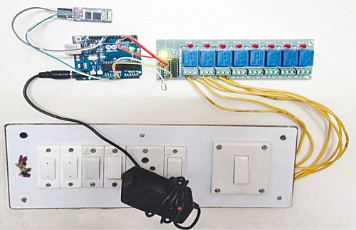App Inventor for Android is an open-source web application originally provided by Google, and now maintained by the Massachusetts Institute of Technology (MIT). It allows newcomers to computer programming to create software ... to drag-and-drop visual objects to create an application that can run on Android devices.
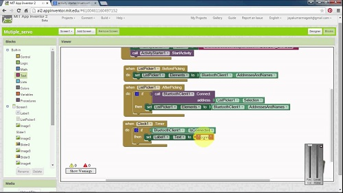According to its developers, "ThingSpeak is an open source Internet of Things (IoT) application and API to store and retrieve data from ... logging applications, location tracking applications, and a social network of things with status updates".
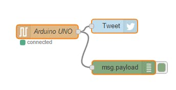A data logger is an electronic device that records data over time or in relation to location either ... The development of the Semantic Web and the Internet of Things is likely to accelerate .... system designed to collect data from various sensors on board a ship. ... The growing, preparation, storage and transportation of food.
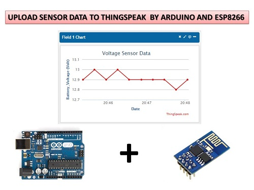Cloud computing is a computing infrastructure and software model for enabling ubiquitous .... Compared to fog computing, which supports emerging IoT applications that demand real-time and predictable latency and the dynamic network ...
Mobile Cloud Computing (MCC) is the combination of cloud computing, mobile computing and ... MCC uses computational augmentation approaches (computations are ... cloud computing, and communication networks (to augment smartphones) ... mobile cloud, mobile web services
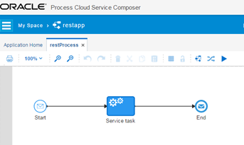Edge computing is a method of optimising cloud computing systems by performing data processing at the edge of the network, near the source of the data.
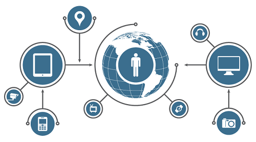From Wikipedia, the free encyclopedia. Jump to: navigation, search. Cloud management is the management of cloud computing products and services.
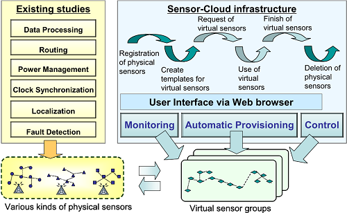Waspmote is an open source wireless sensor platform focused on low ... with the Arduino programming environment (IDE), allowing Arduino Community use ... the Nodes; Radio Interfaces; Program in minutes; Data to the Cloud; Models ... of a coin battery... and it is possible to upload code with the XBee radio plugged!
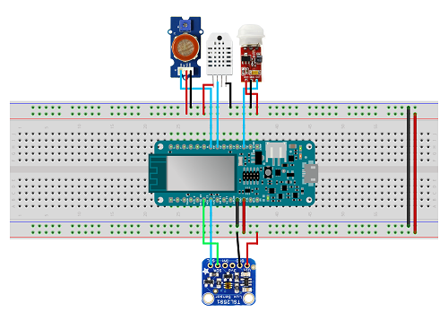Data from the sensors are displayed in real time on ThingSpeak and using some of ... the Gas Sensor device can send out Tweets for Alert and Alarm conditions.” .... account, ThingTweet generates the Arduino sketch for you automatically.
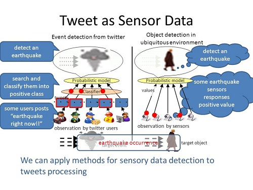In this recipe you will see how to send an alert from any IoT Device which ... Prepare Watson IoT Platform for receiving data ... Provide a token for the device and click “Next” (If you leave this field blank the token will be auto generated) ..... mobile device to the Watson IoT Platform and use it as the location
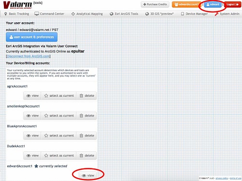The Internet of Things (IoT) is the next wave, world is going to witness. Today we live in an era of connected devices (mobile phones, computers etc.) ... Project 5: Creating own Android App using MIT App Inventor & controlling Arduino device ... Project 11: Control Electronic Devices from anywhere across the world using
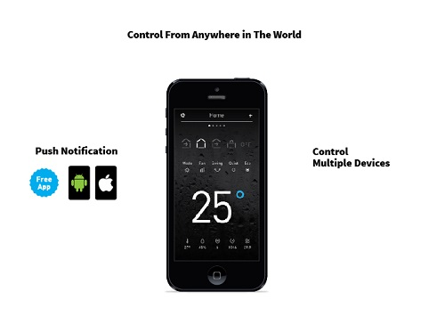The following Members are available in the day of workshop.
Name : Arijit Bag
Dept.:CSE,3rd Year
Contact:(+91)9903753490
Name : Aninda Basu
Dept.:CSE,3rd Year
Contact:(+91)7278720110
Name : Prof Shirshendu Hore
Dept.:CSE
Contact:(+91)9836372171